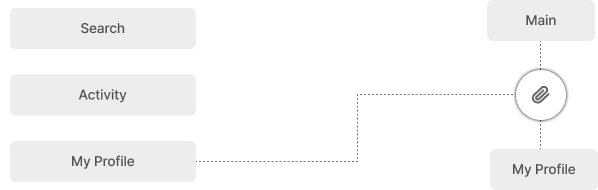

Background
History
스레드는 앱 출시 5일 만에 글로벌 가입자 1억명을 넘어서며 연일
신기록을 세우고 있다.
인스타그램의 계정을 통해 이용할 수 있고 최대 500자 장문 텍스트를 작성할 수 있으며
5분 길이의 동영상을 게시할 수도 있다. 하지만 스레드의 상승세는 갈수록 주춤하고 있다.
인스타그램의 계정을 통해 이용할 수 있고 최대 500자 장문 텍스트를 작성할 수 있으며
5분 길이의 동영상을 게시할 수도 있다. 하지만 스레드의 상승세는 갈수록 주춤하고 있다.
Process
Desk Research
User Interview
IA
as is - to be
Tool
Figma
React
Photoshop
Desk Research
스레드는 어떤 목적으로 만들어졌을까
인스타그램을 만든 메타(Meta)의 차기 sns서비스 이다. 쉬운 접근성과
서로간의 피드와 스토리를 보며 개방적이고 긴밀하게
소통하는 인스타그램과 달리 보다 테스트위주의 글을 작성하고 팔로워 중 원하는 사람들과 가볍게 소통할 수 있는sns이다.
소통하는 인스타그램과 달리 보다 테스트위주의 글을 작성하고 팔로워 중 원하는 사람들과 가볍게 소통할 수 있는sns이다.
스레드 사용자의 이탈률은 왜 높을까
X(트위터)는 익명성을 기반으로 유사한 취미, 정치 성향, 가치관을 가진
이용자끼리 깊게 소통할 수 있는 플랫폼으로 인기를 얻었다.
반면 스레드는 인스타그램 계정을 기반으로 하기 때문에 트위터 이용자들이 자유를 느끼는 익명성의 장점을 구현하지 못했다.
반면 스레드는 인스타그램 계정을 기반으로 하기 때문에 트위터 이용자들이 자유를 느끼는 익명성의 장점을 구현하지 못했다.

User Interview
실제 스레드와 다른 sns 서비스를 이용중인 사람들을 대상으로
스레드의
불편한 이유와 다른 sns에 비하여 자주 사용하지 않는 이유를 들었다.
불편한 이유와 다른 sns에 비하여 자주 사용하지 않는 이유를 들었다.
Interview Conditions
대면 인터뷰
익명 인터뷰
Interview Range
20대 ~ 30대
남성 / 여성
직장인
대학생
기타
정**
24세 남자
대학생

김**
30세 여자
대학원생
임**
29세 여자
회사원

백**
28세 남자
개발자

Problem
인스타그램 계정없이 사용할 수 없어요.
공개범위 설정이 자세하지 않아요.
데스크탑 모드에 다크라이트모드를 설정할 수 없어요.
핀기능 사용시 사이드바가 시인성을 방해해요.
호기심에 만들어봤는데 계정 탈퇴가 불가능해요

Problem
인스타그램 계정없이 사용할 수 없어요.
공개범위 설정이 자세하지 않아요.
데스크탑 모드에 다크라이트모드를 설정할 수 없어요.
핀기능 사용시 사이드바가 시인성을 방해해요.
호기심에 만들어봤는데 계정 탈퇴가 불가능해요
Solution
to-be
독자적인 계성 생성을 만들어 인스타그램의 계정 없이도 회원가입이
가능하게 만든다.
공개 범위 설정을 자세하게 구분하여 사용자의 구체적인 공개범위
설정을 도와준다.
설정에 다크모드와 라이트모드를 추가하여 사용자가 원하는 모드를
설정할 수 있게 한다.
사이드바를 헤더로 리뉴얼하여 사용자의 데스트 탑 사용성을
높여준다.
회원 탈퇴 기능을 추가하여 사용자의 서비스 이용의 자유성을
보장한다.
IA
Logo
Color
#FAFAFA
RGB(250, 250, 250)
#F3F5F7
RGB(243, 245, 247)
#E9E9E9
RGB(233, 233, 233)
#D2D3D3
RGB(210, 211, 211)
#BABABA
RGB(186, 186, 186)
#4D4D4D
RGB(77, 77, 77)
#181818
RGB(24, 24, 24)
#000000
RGB(0, 0, 0)
Typography
ABCDEFGHIJKLMNOPQRSTUVWXYZabcdefghi
jklmnopqrstuvwxyz
jklmnopqrstuvwxyz
‘Beauty is in the eye of the beholder.’ 사랑하는 사람은 뭐든지 다
예뻐 보인다는 말인데,
마케팅에서 성공한 디자인은 다 예뻐 보이는 법이지. 폴 랜드(Paul Rand)
마케팅에서 성공한 디자인은 다 예뻐 보이는 법이지. 폴 랜드(Paul Rand)
Pretendard
Pretendard
Bold
SemiBold
Medium
Regular
User Interface
스레드 전용 회원가입을 통해
인스타그램 계정없이도 이용할 수 있어요.
인스타그램 계정없이도 이용할 수 있어요.
Thread-only membership
You can use it without an Instagram account.
You can use it without an Instagram account.
사용자의 자유성을 높이고 독립적인
SNS서비스를 제공합니다.
SNS서비스를 제공합니다.
Increase user freedom and become independent
We provide SNS services.
We provide SNS services.
활동 페이지에서 팔로워와
내 활동을 관리하세요.
내 활동을 관리하세요.
On the activity page, follower and
Take care of my activities.
Take care of my activities.
마이 프로필 페이지에서 내가
업로드한 컨텐츠를 한번에 확인하세요.
업로드한 컨텐츠를 한번에 확인하세요.
The content that I uploaded Check it out at once.
여러개의 페이지를 모두 펼쳐 보면서 즐겨보세요.
Enjoy it while opening up all the pages.
데스크 탑 사용시 핀 아이콘을 눌러 원하는 페이지를 화면에 올릴 수
있습니다.


다크 / 라이트 모드를 사용해
원하는 모드로 빠르게 바꿔 사용하세요.
원하는 모드로 빠르게 바꿔 사용하세요.
Use dark/light mode Quickly switch to the mode you want on
your desktop.